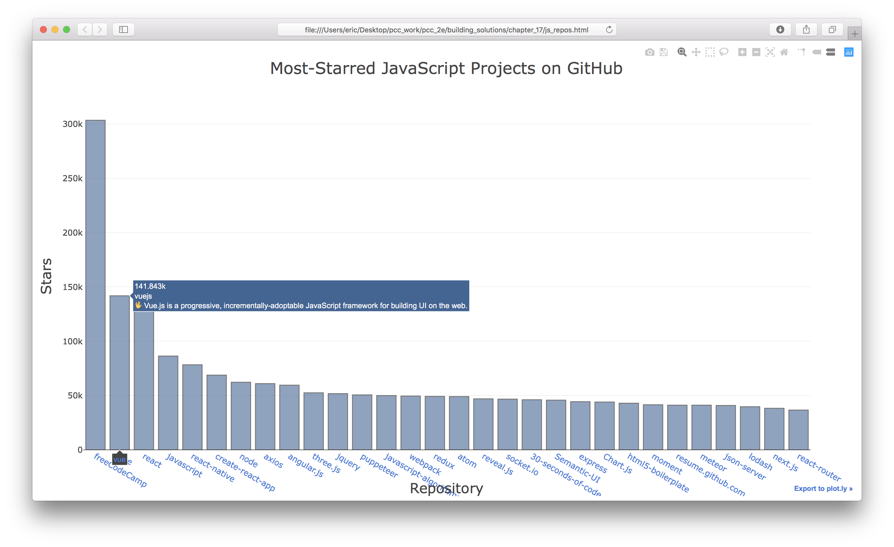
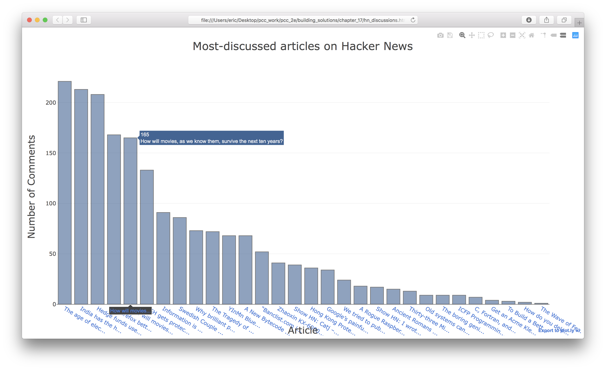

Solutions - Chapter 17
Back to solutions.
17-1: Other Languages
Modify the API call in python_repos.py so it generates a chart showing the most popular projects in other languages. Try languages such as JavaScript, Ruby, C, Java, Perl, Haskell, and Go.
import requests
from plotly.graph_objs import Bar
from plotly import offline
# Make an API call and store the response.
url = 'https://api.github.com/search/repositories?q=language:javascript&sort=stars'
headers = {'Accept': 'application/vnd.github.v3+json'}
r = requests.get(url, headers=headers)
print(f"Status code: {r.status_code}")
# Process results.
response_dict = r.json()
repo_dicts = response_dict['items']
repo_links, stars, labels = [], [], []
for repo_dict in repo_dicts:
repo_name = repo_dict['name']
repo_url = repo_dict['html_url']
repo_link = f"<a href='{repo_url}'>{repo_name}</a>"
repo_links.append(repo_link)
stars.append(repo_dict['stargazers_count'])
owner = repo_dict['owner']['login']
description = repo_dict['description']
label = f"{owner}<br />{description}"
labels.append(label)
# Make visualization.
data = [{
'type': 'bar',
'x': repo_links,
'y': stars,
'hovertext': labels,
'marker': {
'color': 'rgb(60, 100, 150)',
'line': {'width': 1.5, 'color': 'rgb(25, 25, 25)'}
},
'opacity': 0.6,
}]
my_layout = {
'title': 'Most-Starred JavaScript Projects on GitHub',
'titlefont': {'size': 28},
'xaxis': {
'title': 'Repository',
'titlefont': {'size': 24},
'tickfont': {'size': 14},
},
'yaxis': {
'title': 'Stars',
'titlefont': {'size': 24},
'tickfont': {'size': 14},
},
}
fig = {'data': data, 'layout': my_layout}
offline.plot(fig, filename='js_repos.html')
Output:

17-2: Active Discussions
Using the data from hn_submissions.py, make a bar chart showing the most active discussions currently happening on Hacker News. The height of each bar should correspond to the number of comments each submission has. The label for each bar should include the submission’s title and should act as a link to the discussion page for that submission.
Note: There are a number of ways you can approach this exercise. Here I kept the original code for processing submissions as is, and then wrote a loop to generate the lists needed for making the visualization. This retains all the original data, and just plots what we’re interested in. You could also modify the original loop that processes submission IDs, and only pull out the information you want to visualize.
from operator import itemgetter
import requests
from plotly.graph_objs import Bar
from plotly import offline
# Make an API call and store the response.
url = 'https://hacker-news.firebaseio.com/v0/topstories.json'
r = requests.get(url)
print(f"Status code: {r.status_code}")
# Process information about each submission.
submission_ids = r.json()
submission_dicts = []
for submission_id in submission_ids[:30]:
# Make a separate API call for each submission.
url = f"https://hacker-news.firebaseio.com/v0/item/{submission_id}.json"
r = requests.get(url)
print(f"id: {submission_id}\tstatus: {r.status_code}")
response_dict = r.json()
# Build a dictionary for each article.
submission_dict = {
'title': response_dict['title'],
'hn_link': f"http://news.ycombinator.com/item?id={submission_id}",
'comments': response_dict['descendants'],
}
submission_dicts.append(submission_dict)
submission_dicts = sorted(submission_dicts, key=itemgetter('comments'),
reverse=True)
for submission_dict in submission_dicts:
print(f"\nTitle: {submission_dict['title']}")
print(f"Discussion link: {submission_dict['hn_link']}")
print(f"Comments: {submission_dict['comments']}")
# Generate lists for plotting.
titles, num_comments, discn_links = [], [], []
for sd in submission_dicts:
title = sd['title']
hn_link = sd['hn_link']
discn_link = f"<a href='{hn_link}'>{title[:15]}...</a>"
titles.append(title)
num_comments.append(sd['comments'])
discn_links.append(discn_link)
# Make visualization.
data = [{
'type': 'bar',
'x': discn_links,
'y': num_comments,
'hovertext': titles,
'marker': {
'color': 'rgb(60, 100, 150)',
'line': {'width': 1.5, 'color': 'rgb(25, 25, 25)'}
},
'opacity': 0.6,
}]
my_layout = {
'title': 'Most-discussed articles on Hacker News',
'titlefont': {'size': 28},
'xaxis': {
'title': 'Article',
'titlefont': {'size': 24},
'tickfont': {'size': 14},
},
'yaxis': {
'title': 'Number of Comments',
'titlefont': {'size': 24},
'tickfont': {'size': 14},
},
}
fig = {'data': data, 'layout': my_layout}
offline.plot(fig, filename='hn_discussions.html')
Output:

17-3: Testing python_repos.py
In python_repos.py, we printed the value of status_code to make sure the API call was successful. Write a program called test_python_repos.py that uses unittest to assert that the value of status_code is 200. Figure out some other assertions you can make — for example, that the number of items returned is expected and that the total number of repositories is greater than a certain amount.
Note: Writing tests pushes you to structure your code in a way that it can be tested. Here’s a revised version of python_repos.py, with all of the work written as four functions:
import requests
from plotly.graph_objs import Bar
from plotly import offline
def get_response():
"""Make an api call, and return the response."""
url = 'https://api.github.com/search/repositories?q=language:python&sort=stars'
headers = {'Accept': 'application/vnd.github.v3+json'}
r = requests.get(url, headers=headers)
return r
def get_repo_dicts(r):
"""Return a set of dicts representing the most popular repositories."""
response_dict = r.json()
repo_dicts = response_dict['items']
return repo_dicts
def get_project_data(repo_dicts):
"""Return data needed for each project in visualization."""
repo_links, stars, labels = [], [], []
for repo_dict in repo_dicts:
repo_name = repo_dict['name']
repo_url = repo_dict['html_url']
repo_link = f"<a href='{repo_url}'>{repo_name}</a>"
repo_links.append(repo_link)
stars.append(repo_dict['stargazers_count'])
owner = repo_dict['owner']['login']
description = repo_dict['description']
label = f"{owner}<br />{description}"
labels.append(label)
return repo_links, stars, labels
def make_visualization(repo_links, stars, labels):
"""Generate the visualization of most commented articles."""
data = [{
'type': 'bar',
'x': repo_links,
'y': stars,
'hovertext': labels,
'marker': {
'color': 'rgb(60, 100, 150)',
'line': {'width': 1.5, 'color': 'rgb(25, 25, 25)'}
},
'opacity': 0.6,
}]
my_layout = {
'title': 'Most-Starred Python Projects on GitHub',
'titlefont': {'size': 28},
'xaxis': {
'title': 'Repository',
'titlefont': {'size': 24},
'tickfont': {'size': 14},
},
'yaxis': {
'title': 'Stars',
'titlefont': {'size': 24},
'tickfont': {'size': 14},
},
}
fig = {'data': data, 'layout': my_layout}
offline.plot(fig, filename='python_repos.html')
if __name__ == '__main__':
r = get_response()
repo_dicts = get_repo_dicts(r)
repo_links, stars, labels = get_project_data(repo_dicts)
make_visualization(repo_links, stars, labels)
The function calls are placed in an if block so they are executed when this file is run directly, but not when it’s imported.
Now we can write tests for these functions. Here we test that we get a response with a status code of 200, and we test that some of the keys we expect to find in each repository’s dictionary are in the first project’s dictionary.
import unittest
import python_repos as pr
class PythonReposTestCase(unittest.TestCase):
"""Tests for python_repos.py."""
def setUp(self):
"""Call all the functions here, and test elements separately."""
self.r = pr.get_response()
self.repo_dicts = pr.get_repo_dicts(self.r)
self.repo_dict = self.repo_dicts[0]
self.repo_links, self.stars, self.labels = pr.get_project_data(
self.repo_dicts)
def test_get_response(self):
"""Test that we get a valid response."""
self.assertEqual(self.r.status_code, 200)
def test_repo_dicts(self):
"""Test that we're getting the data we think we are."""
# We should get dicts for 30 repositories.
self.assertEqual(len(self.repo_dicts), 30)
# Repositories should have required keys.
required_keys = ['name', 'owner', 'stargazers_count', 'html_url']
for key in required_keys:
self.assertTrue(key in self.repo_dict.keys())
if __name__ == '__main__':
unittest.main()
Output:
..
----------------------------------------------------------------------
Ran 2 tests in 2.371s
OK